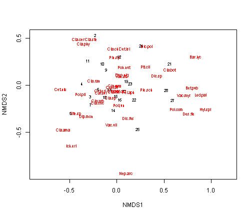
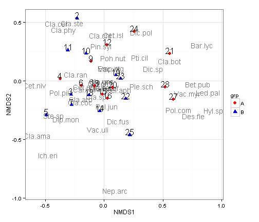
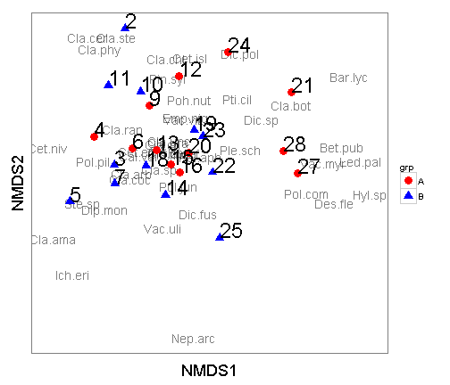
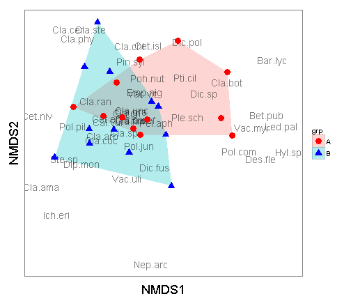

Plotting NMDS plots with ggplot2
The RMarkdown source to this file can be found here
One of my favorite packages in R is ggplot2, created by Hadley Wickham. This package allows you to create scientific quality figures of everything from shapefiles to NMDS plots. I will run through a walkthrough in how to make a NMDS plot using the vegan package and ggplot2. I am not going to go into the details into running the NMDS, as for this walkthrough I am making the assumption you already have a finalized output.
Load the libraries and get the data
library(vegan) #load the vegan package## Loading required package: permute
## This is vegan 2.0-7library(ggplot2) #load the ggplot2 package## Use suppressPackageStartupMessages to eliminate package startup messages.
data(varespec) #load the vegan package
head(varespec) # look at the first 6 rows of the data## Cal.vul Emp.nig Led.pal Vac.myr Vac.vit Pin.syl Des.fle Bet.pub Vac.uli
## 18 0.55 11.13 0.00 0.00 17.80 0.07 0.00 0 1.60
## 15 0.67 0.17 0.00 0.35 12.13 0.12 0.00 0 0.00
## 24 0.10 1.55 0.00 0.00 13.47 0.25 0.00 0 0.00
## 27 0.00 15.13 2.42 5.92 15.97 0.00 3.70 0 1.12
## 23 0.00 12.68 0.00 0.00 23.73 0.03 0.00 0 0.00
## 19 0.00 8.92 0.00 2.42 10.28 0.12 0.02 0 0.00
## Dip.mon Dic.sp Dic.fus Dic.pol Hyl.spl Ple.sch Pol.pil Pol.jun Pol.com
## 18 2.07 0.00 1.62 0.00 0.0 4.67 0.02 0.13 0.00
## 15 0.00 0.33 10.92 0.02 0.0 37.75 0.02 0.23 0.00
## 24 0.00 23.43 0.00 1.68 0.0 32.92 0.00 0.23 0.00
## 27 0.00 0.00 3.63 0.00 6.7 58.07 0.00 0.00 0.13
## 23 0.00 0.00 3.42 0.02 0.0 19.42 0.02 2.12 0.00
## 19 0.00 0.00 0.32 0.02 0.0 21.03 0.02 1.58 0.18
## Poh.nut Pti.cil Bar.lyc Cla.arb Cla.ran Cla.ste Cla.unc Cla.coc Cla.cor
## 18 0.13 0.12 0.00 21.73 21.47 3.50 0.30 0.18 0.23
## 15 0.03 0.02 0.00 12.05 8.13 0.18 2.65 0.13 0.18
## 24 0.32 0.03 0.00 3.58 5.52 0.07 8.93 0.00 0.20
## 27 0.02 0.08 0.08 1.42 7.63 2.55 0.15 0.00 0.38
## 23 0.17 1.80 0.02 9.08 9.22 0.05 0.73 0.08 1.42
## 19 0.07 0.27 0.02 7.23 4.95 22.08 0.25 0.10 0.25
## Cla.gra Cla.fim Cla.cri Cla.chl Cla.bot Cla.ama Cla.sp Cet.eri Cet.isl
## 18 0.25 0.25 0.23 0.00 0.00 0.08 0.02 0.02 0.00
## 15 0.23 0.25 1.23 0.00 0.00 0.00 0.00 0.15 0.03
## 24 0.48 0.00 0.07 0.10 0.02 0.00 0.00 0.78 0.12
## 27 0.12 0.10 0.03 0.00 0.02 0.00 0.02 0.00 0.00
## 23 0.50 0.17 1.78 0.05 0.05 0.00 0.00 0.00 0.00
## 19 0.18 0.10 0.12 0.05 0.02 0.00 0.00 0.00 0.00
## Cet.niv Nep.arc Ste.sp Pel.aph Ich.eri Cla.cer Cla.def Cla.phy
## 18 0.12 0.02 0.62 0.02 0 0 0.25 0
## 15 0.00 0.00 0.85 0.00 0 0 1.00 0
## 24 0.00 0.00 0.03 0.00 0 0 0.33 0
## 27 0.00 0.00 0.00 0.07 0 0 0.15 0
## 23 0.02 0.00 1.58 0.33 0 0 1.97 0
## 19 0.02 0.00 0.28 0.00 0 0 0.37 0For this walkthrough I would like to assign a “group” to the each row of the data for illustration purposes. Normally, your data will already belong to a grp and this next step will not be necessary.
The basic process I will use to assign these groups is to to find the number of rows of the varespec data and then randomly sample half rows to group ‘A’ and the other half will be group ‘B’.
set.seed(123456) #this will set the seed so that the random draw will be the same
nrow(varespec)## [1] 24
# create a grouping variable that has a length of 24, the same # of rows of
# varespec using the rep function
grp <- rep(NA, 24)
# randomly sample 12 of those rows to belong in grp A
ind <- sample(1:nrow(varespec), 12)
# assign those in ind to grp A
grp[ind] <- "A"
grp## [1] NA "A" "A" "A" NA NA NA "A" "A" "A" NA "A" NA NA NA "A" NA
## [18] "A" NA "A" "A" NA NA "A"
# assign the NAs to grp B
grp[is.na(grp)] <- "B"
# Then take a look at the results
grp## [1] "B" "A" "A" "A" "B" "B" "B" "A" "A" "A" "B" "A" "B" "B" "B" "A" "B"
## [18] "A" "B" "A" "A" "B" "B" "A"Run the NMDS using the vegan package
vare.mds <- metaMDS(varespec) #using all the defaults## Square root transformation
## Wisconsin double standardization
## Run 0 stress 0.1843
## Run 1 stress 0.2353
## Run 2 stress 0.2045
## Run 3 stress 0.2219
## Run 4 stress 0.2066
## Run 5 stress 0.1948
## Run 6 stress 0.1846
## ... procrustes: rmse 0.04942 max resid 0.1578
## Run 7 stress 0.226
## Run 8 stress 0.1852
## Run 9 stress 0.1858
## Run 10 stress 0.1843
## ... New best solution
## ... procrustes: rmse 0.0001229 max resid 5e-04
## *** Solution reachedvare.mds #display the results##
## Call:
## metaMDS(comm = varespec)
##
## global Multidimensional Scaling using monoMDS
##
## Data: wisconsin(sqrt(varespec))
## Distance: bray
##
## Dimensions: 2
## Stress: 0.1843
## Stress type 1, weak ties
## Two convergent solutions found after 10 tries
## Scaling: centring, PC rotation, halfchange scaling
## Species: expanded scores based on 'wisconsin(sqrt(varespec))'I am not a fan of using base R for graphics. When you are in a pinch, they are ok to call but never hand in an assignment or attempt to submit for a publication the default plots.
plot(vare.mds, type = "t")
Using ggplot for the NMDS plot
The first step is to extract the scores (the x and y coordinates of the site (rows) and species and add the grp variable we created before. Once again the grp variable is not needed, I am just using it for illustration purposes. For the data.scores, the result will be a 26 row x 4 column data.frame with the NMDS1 (x location) and NMDS2 (y location), designated by the site number and the group (grp). The species.scores will be a 44 row by 3 column data.frame with the NMDS1 (x location), NMDS2 (y location), and species.
data.scores <- as.data.frame(scores(vare.mds)) #Using the scores function from vegan to extract the site scores and convert to a data.frame
data.scores$site <- rownames(data.scores) # create a column of site names, from the rownames of data.scores
data.scores$grp <- grp # add the grp variable created earlier
head(data.scores) #look at the data## NMDS1 NMDS2 site grp
## 18 -0.12983 -0.12169 18 B
## 15 -0.01377 -0.11541 15 A
## 24 0.25603 0.41941 24 A
## 27 0.58918 -0.15769 27 A
## 23 0.14003 0.01794 23 B
## 19 0.09844 0.04796 19 B
species.scores <- as.data.frame(scores(vare.mds, "species")) #Using the scores function from vegan to extract the species scores and convert to a data.frame
species.scores$species <- rownames(species.scores) # create a column of species, from the rownames of species.scores
head(species.scores) #look at the data## NMDS1 NMDS2 species
## Cal.vul -0.16683 -0.07432 Cal.vul
## Emp.nig 0.05842 0.10667 Emp.nig
## Led.pal 0.88647 -0.10071 Led.pal
## Vac.myr 0.71151 -0.10910 Vac.myr
## Vac.vit 0.04376 0.09994 Vac.vit
## Pin.syl -0.02586 0.29633 Pin.sylNow that we have the site and species scores, we can begin plotting with ggplot2. First we will produce a plot like the base plot function.
ggplot() +
geom_text(data=species.scores,aes(x=NMDS1,y=NMDS2,label=species),alpha=0.5) + # add the species labels
geom_point(data=data.scores,aes(x=NMDS1,y=NMDS2,shape=grp,colour=grp),size=3) + # add the point markers
geom_text(data=data.scores,aes(x=NMDS1,y=NMDS2,label=site),size=6,vjust=0) + # add the site labels
scale_colour_manual(values=c("A" = "red", "B" = "blue")) +
coord_equal() +
theme_bw()
There are a couple of changes I like to make in the themes to make these a little nicer.
ggplot() +
geom_text(data=species.scores,aes(x=NMDS1,y=NMDS2,label=species),alpha=0.5) + # add the species labels
geom_point(data=data.scores,aes(x=NMDS1,y=NMDS2,shape=grp,colour=grp),size=4) + # add the point markers
geom_text(data=data.scores,aes(x=NMDS1,y=NMDS2,label=site),size=8,vjust=0,hjust=0) + # add the site labels
scale_colour_manual(values=c("A" = "red", "B" = "blue")) +
coord_equal() +
theme_bw() +
theme(axis.text.x = element_blank(), # remove x-axis text
axis.text.y = element_blank(), # remove y-axis text
axis.ticks = element_blank(), # remove axis ticks
axis.title.x = element_text(size=18), # remove x-axis labels
axis.title.y = element_text(size=18), # remove y-axis labels
panel.background = element_blank(),
panel.grid.major = element_blank(), #remove major-grid labels
panel.grid.minor = element_blank(), #remove minor-grid labels
plot.background = element_blank())
Another way to look at these is to plot a hull around each of the groups. To accomplish this, you can utilize the chull function. In the below plot I dropped the site score labels.
grp.a <- data.scores[data.scores$grp == "A", ][chull(data.scores[data.scores$grp ==
"A", c("NMDS1", "NMDS2")]), ] # hull values for grp A
grp.b <- data.scores[data.scores$grp == "B", ][chull(data.scores[data.scores$grp ==
"B", c("NMDS1", "NMDS2")]), ] # hull values for grp B
hull.data <- rbind(grp.a, grp.b) #combine grp.a and grp.b
hull.data## NMDS1 NMDS2 site grp
## 27 0.58918 -0.15769 27 A
## 16 0.02939 -0.15007 16 A
## 4 -0.37538 0.01663 4 A
## 12 0.02425 0.30475 12 A
## 24 0.25603 0.41941 24 A
## 21 0.55793 0.22927 21 A
## 22 0.18416 -0.15261 22 B
## 25 0.21868 -0.46169 25 B
## 5 -0.49165 -0.29143 5 B
## 2 -0.22988 0.53244 2 B
## 23 0.14003 0.01794 23 Band plot it out There are a couple of changes I like to make in the themes to make these a little nicer.
ggplot() +
geom_polygon(data=hull.data,aes(x=NMDS1,y=NMDS2,fill=grp,group=grp),alpha=0.30) + # add the convex hulls
geom_text(data=species.scores,aes(x=NMDS1,y=NMDS2,label=species),alpha=0.5) + # add the species labels
geom_point(data=data.scores,aes(x=NMDS1,y=NMDS2,shape=grp,colour=grp),size=4) + # add the point markers
scale_colour_manual(values=c("A" = "red", "B" = "blue")) +
coord_equal() +
theme_bw() +
theme(axis.text.x = element_blank(), # remove x-axis text
axis.text.y = element_blank(), # remove y-axis text
axis.ticks = element_blank(), # remove axis ticks
axis.title.x = element_text(size=18), # remove x-axis labels
axis.title.y = element_text(size=18), # remove y-axis labels
panel.background = element_blank(),
panel.grid.major = element_blank(), #remove major-grid labels
panel.grid.minor = element_blank(), #remove minor-grid labels
plot.background = element_blank())
ggplot2 gives you a lot of flexibility in developing plots. Whenever you are thinking of plotting with ggplot2 you need to first get the data in a data.frame format. Additionally, because ggplot2 is based on the “Grammar of Graphics” by Leland Wilkinson, you can only have two-axis. Given that, each layer must have the same x and y colummn names. In addition, the plots are built in layers. If in the above plot, if you were to put the geom_polygon below the geom_point line then the hulls would cover up the points and text.